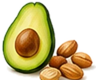

Gallbladder pain? Know exactly what to eat, and what to avoid.
Get the free one-page Gallstones Fridge Guide. Stick it on your fridge and stop guessing at every meal.


Where should we send your guide?
- Over 50 everyday foods sorted into choose, limit and avoid
- A gentle-foods list for bad days
- Simple portion tips that make the biggest difference
Does this sound like you?
- You've had an attack and now you're scared to eat.
- Your doctor said "cut down on fat" and that was it.
- You're not sure if milk, cheese, eggs or a glass of wine is OK.
- You're waiting for treatment and want fewer bad days.
You're not alone. Big, fatty meals are the most common trigger for gallbladder pain, but nobody tells you which everyday foods are the problem. This guide does. It's one page, it's simple, and it lives where you need it: on your fridge.
A peek inside the guide
 Fried foodAvoid
Fried foodAvoid Full-fat cheeseAvoid
Full-fat cheeseAvoid Bacon and sausagesAvoid
Bacon and sausagesAvoid
Avocado and nutsLimit BananasChoose
BananasChoose Chicken breastChoose
Chicken breastChoose VegetablesChoose
VegetablesChoosePlus dozens more, all on one printable page.
Get your free Fridge Guide now
It takes 10 seconds. We'll email it to you straight away.
Is it really free?
Yes. There's nothing to pay. You'll also get a few short emails with tips on eating well with gallstones, and you can unsubscribe any time.
How do I get it?
Pop your email in the box and we'll send it straight to your inbox as a PDF. Print it on A4 and stick it on your fridge.
Is this medical advice?
No. It's general guidance on food, based on NHS dietary advice. Always follow what your GP or specialist tells you. If you have severe pain, a high temperature or yellow skin or eyes, call 999 or go to A&E.